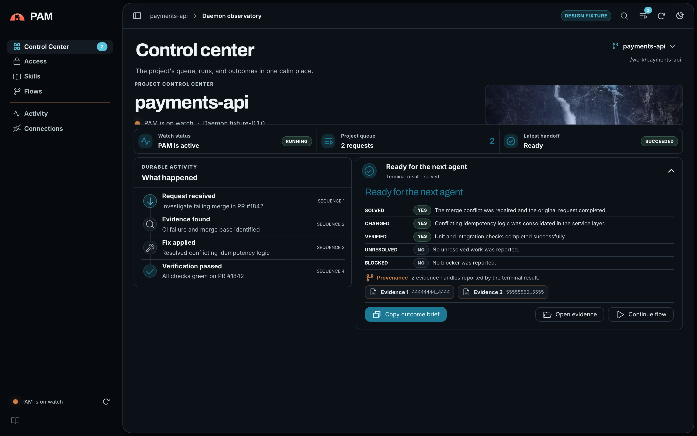
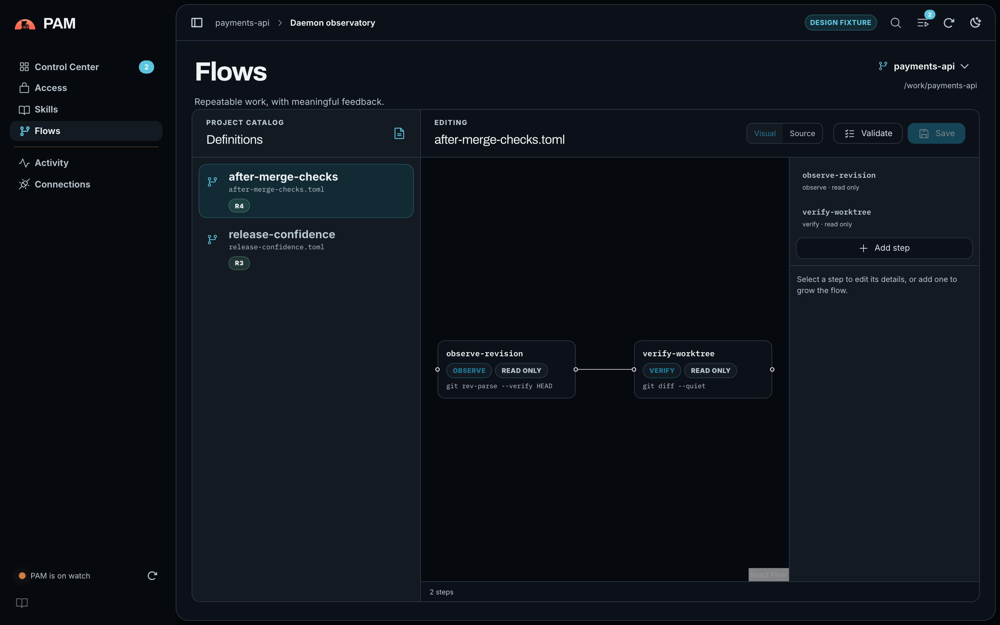
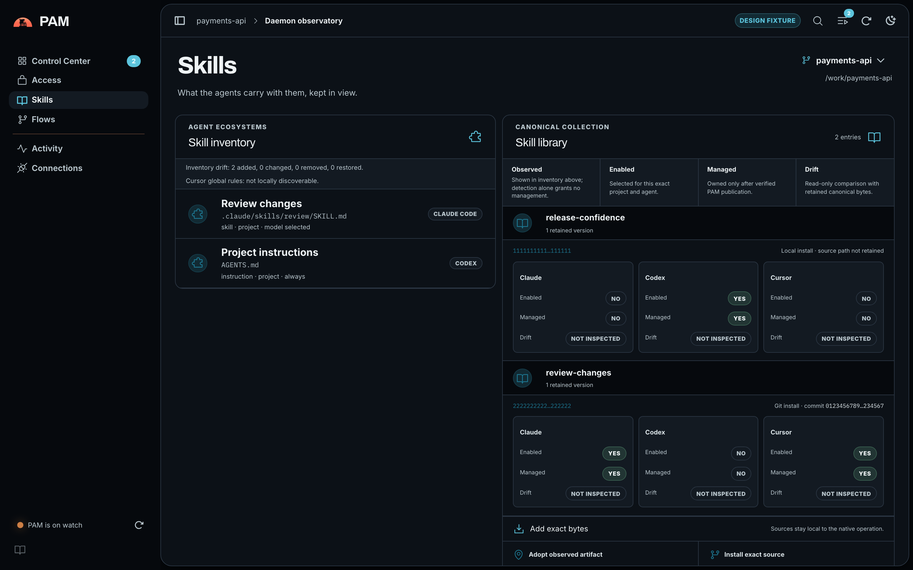
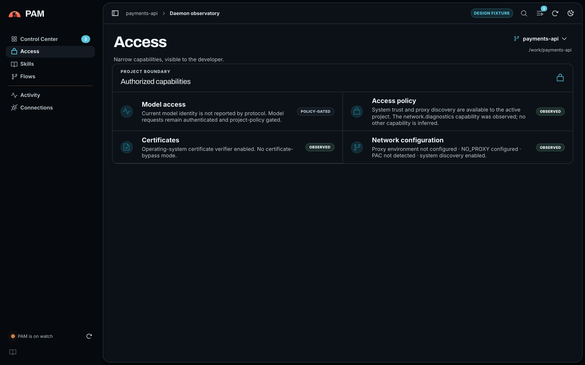
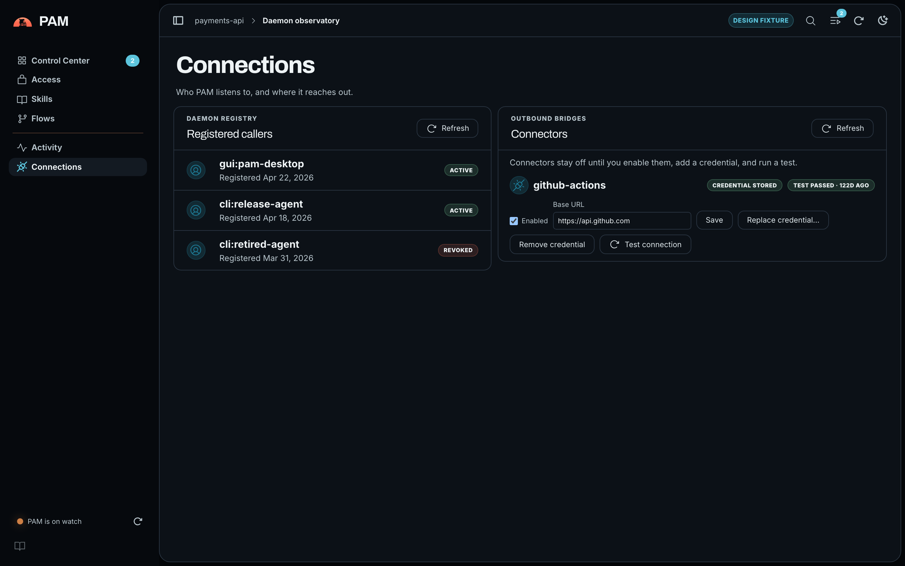
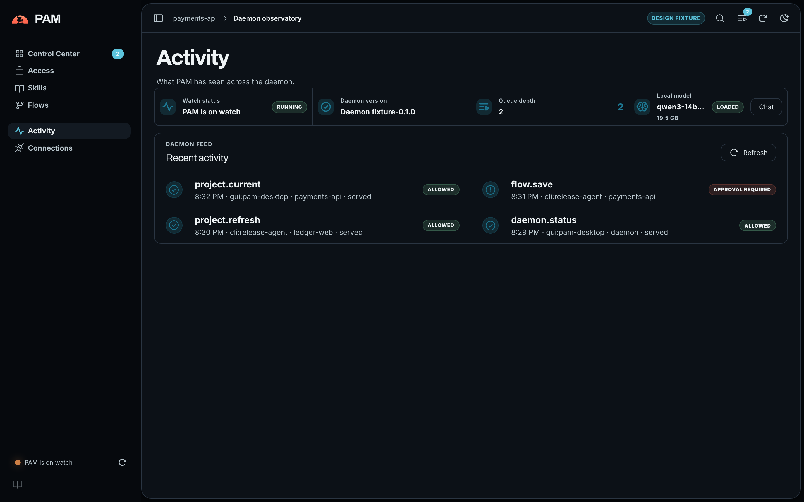
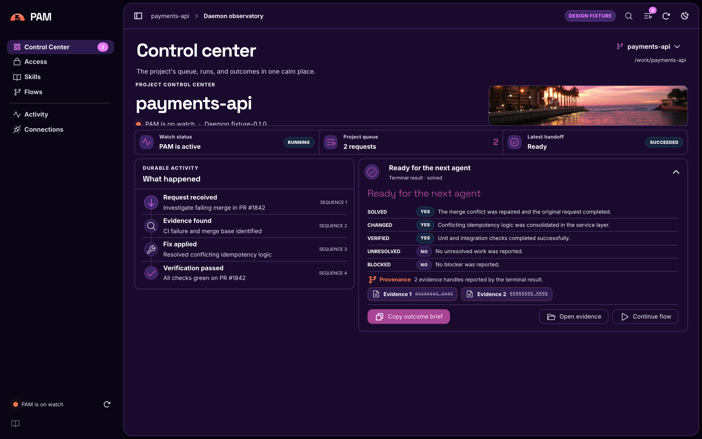

PAM
A local lifeguard for developers and AI agents in corporate environments — always on watch, ready with the verified project story.

Why PAM
Agents lose the plot. PAM keeps it.
Corporate development work is fragmented across build logs, Git, CI, SonarQube, Jira, Confluence, credentials, policy prompts, and restrictive sandboxes — and agents lose useful context whenever a conversation is compacted or restarted. PAM sits locally between agents and those systems, preserving verified continuity and returning small, evidence-backed results.
? What project am I acting on
…and what work is already in flight? One durable per-project timeline that callers share without racing or repeating expensive work.
? What actually failed
…where is the evidence, and what can PAM safely fix? Deterministic log reduction first; original evidence always addressable, byte-for-byte.
? Which action needs a human
Default-deny policy with explicit-deny precedence and exact-effect, one-time approvals — consumed transactionally right before dispatch.
? What changed, and is it verified
Terminal handoff cards answer solved / changed / verified / unresolved / blocked with provenance, so the next agent starts from truth.
The control center
One calm place for the whole watch.
One pam binary ships three modes — client CLI, local daemon, and an embedded desktop control center (pam gui). Two theme families, Ventisquero Mist and Viña del Mar Dawn, each with true light and dark variants.

pam flow run.




Install
Grab a packaged build.
Every release ships signed desktop packages plus the matching pam helper binary, built by CI on native runners. Download from the latest release.
| Platform | Architecture | Package |
|---|---|---|
| macOS 12+ | arm64 (Apple Silicon) | Signed, notarized, stapled DMG — drag PAM.app to Applications |
| Linux | amd64, arm64 | pam_<version>_linux_<arch>.tar.gz |
| Windows | amd64, arm64 | pam_<version>_windows_<arch>.zip |
PAM_PTRACK_EXECUTABLE, beside the application, common per-user install directories such as ~/.local/bin, and finally PATH — so Finder and desktop-menu launches do not depend on an interactive shell profile.
The embedded llama.cpp/Metal model runtime is macOS-only; the portable desktop surfaces report that limitation instead of implying a model is available.
First run
From zero to a verified brief.
PAM is default-deny: every caller registers once, then receives only the capabilities it needs for the current project. The commands below use pam from a packaged build; from a source checkout, prefix each with cargo run -p pam_cli --.
Register a caller and grant capabilities
The caller's secret is kept in the operating system's native credential store. Grants are scoped to the exact project, capability, and resource.
pam caller register
pam access grant daemon.status --resource daemon
pam access grant brief.readStart the daemon
Run it from an initialized project, in its own terminal. It runs in the foreground and shuts down cleanly on Ctrl-C.
pam daemonIf an interrupted daemon leaves stale local endpoint state behind, recover it explicitly:
pam daemon --recoverAsk for the project story
pam brief requires ptrack to be installed and initialized for that exact project root; otherwise it reports the source as unavailable.
pam status
pam briefDurable request observers use pam wait <request-id> and pam result <request-id>. Inspect a brief's exact source with pam evidence show <evidence-handle>, or write it byte-for-byte with --raw/--output.
Open the control center
Launch the installed desktop app, or pam gui from a terminal. Use Register GUI caller on first launch so the desktop shell gets its own revocable identity.
Decide approvals explicitly
When policy returns an approval challenge, decide it, then retry the same operation with the explicit one-time receipt. The receipt is attached only to the command that supplies it — PAM does not read approval authority from the environment.
pam approval approve <approval-id>
pam status --approval-id <approval-id>--approval-id is available on the single-request status, brief, wait, result, and network diagnostics commands. evidence show deliberately does not accept a receipt: one download spans an inspection request plus bounded range-reads, while a one-time receipt authorizes exactly one protocol request.
Flows
Repeatable work, with meaningful feedback.
Flows are auditable sequences of read-only observe and verify steps. Compose them in the GUI's visual editor or as TOML files in the project catalog, validate them, then run them by name:
pam flow run "release check"Each step declares its intent (observe, verify) and its command; the editor shows the same definition as a graph or as source, and the run reports per-step evidence on the project timeline.
Connectors
Dormant until you say otherwise.
Corporate connectors are built in but inert until you enable each one, store its credential in the native credential store, and run a connection test from the GUI. All connector operations are read-only, policy-gated, and audited. The Connectors panel lists whatever the daemon registers, so new connectors appear without frontend changes.
| Connector | Surface | Credential |
|---|---|---|
| GitHub Actions | workflow runs and logs | token |
| Jenkins | jobs, builds, console logs | user:api-token |
| SonarQube | quality gate, issues | token |
| Jira Data Center | projects, issues (JQL) | personal access token |
| Confluence Cloud | pages (CQL) | email:api-token |
| SharePoint (Microsoft Graph) | documents, lists | bearer token, sovereign-cloud base URL |
| AWS CLI passthrough | curated allowlist of read-only aws commands | none stored — the local CLI resolves your own ~/.aws chain; an optional stored profile name is passed as --profile |
Local model
Your weights, your machine, your consent.
PAM integrates a bounded, directly embedded llama.cpp runtime behind its authenticated protocol — and never ships model weights. The first supported profile is the user-owned Qwen3-Coder-30B-A3B-Instruct Q4_K_S artifact. Register its exact bytes and accepted license snapshot:
pam model import \
qwen/qwen3-coder-30b-a3b-instruct-q4-k-s \
--path /absolute/path/to/Qwen3-Coder-30B-A3B-Instruct-Q4_K_S.gguf \
--digest sha256:56a7d00783419bcb0ae566253c371bcb3678261bb79881a553539f5679864db4 \
--size-bytes 17456012448 \
--license-id Apache-2.0 \
--license-url https://huggingface.co/Qwen/Qwen3-Coder-30B-A3B-Instruct/blob/b2cff646eb4bb1d68355c01b18ae02e7cf42d120/LICENSE \
--license-notice-digest sha256:832dd9e00a68dd83b3c3fb9f5588dad7dcf337a0db50f7d9483f310cd292e92e \
--accept-licenseModel loading stays disabled unless the daemon receives --model VENDOR/NAME, then fails closed on the 20 GB profile, fresh memory pressure, swap trend, Metal working set, and OS/PAM reserves:
# Terminal 1
pam daemon --model qwen/qwen3-coder-30b-a3b-instruct-q4-k-s
# Terminal 2
pam model generate \
qwen/qwen3-coder-30b-a3b-instruct-q4-k-s \
'Explain this Rust compiler error and propose the smallest safe fix.' \
--tokens 256The model path is text-only, English-first, and intended for coding plus Python/SQL data analysis. It does not expose an HTTP endpoint. The default model location is ~/llm/<vendor>/<model-name>.<extension> unless you choose another.
Troubleshooting
When the water gets choppy.
macOS: "Register GUI caller" fails, or every credential write errors with errSecAuthFailed (-25293)
A login keychain that cannot auto-unlock returns errSecAuthFailed (-25293) on every write with no permission prompt. It masquerades as an app-level "native credential store unavailable" — it is not a PAM or signing bug. It usually means the keychain password is out of sync with your login password.
Diagnose:
security show-keychain-info ~/Library/Keychains/login.keychain-dbAn authorization error (exit 44) confirms it. Repair (user-side): open Keychain Access → change the password for the keychain named login (needs the old password), or reset your default keychains. Then retry Register GUI caller.
The daemon will not start after a crash or force-quit
An interrupted daemon can leave stale local endpoint state. Recover it explicitly — recovery is deliberate, never silent:
pam daemon --recoverpam brief reports its source as unavailable
Project continuity comes from ptrack, and only through its supported JSON CLI. Check that ptrack is installed, discoverable (see the install notes on PAM_PTRACK_EXECUTABLE), and initialized for that exact project root.
Model import or first generation is denied by policy
That is the default-deny policy working. PAM prints the exact recovery grant alongside the denial — run that printed grant, then retry the identical command or request. Approvals are exact-effect and one-time, so the retry must match what was challenged.
An operation keeps asking for approval
One-time receipts authorize exactly one protocol request. Attach the receipt to the same single-request command with --approval-id <ID>; a receipt cannot be reused across a sequence, and PAM never reads approval authority from the environment.
Where is my data?
Local first, by design: state, logs, policy, and model weights stay under your control. The daemon schedules work durably in SQLite in your per-user data directory, evidence is content-addressed and retained under explicit, bounded retention, and audit export is project-scoped and redacted. Nothing goes to a hosted control plane.